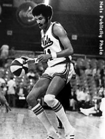

Lloyd "Sonny" Dove
Lloyd "Sonny" Dove was a 6'8 forward who was the 4th overall pick in the 1967 NBA draft and played 3 seasons in the ABA for the New York Nets, averaging 11 points and 6 boards in his professional career. Dove's basketball career was cut short due to substantial injuries to his leg, suffered during a bicycle accident. Unfortunately, ABA players were not paid nearly as well as today’s athletes and this combined with his shortened career meant Sonny was in need of a new source of income. Sonny returned to St. Johns to complete his bachelor’s degree in Communications. He began a broadcasting career, working as commentator for St. Johns basketball games. He also had big dreams, having applied to the FCC for a license to broadcast a radio station in Florida, where he planned to buy a station with a group of others. While waiting for approval, however, he also was busy trying to support himself and his daughter Zana. As an extra source of income, he was working a second job as a cab driver. One night while driving his cab he apparently did not see a flagman who was stopping traffic. His cab skidded off the road and plunged 25 feet into the Gowanus Canal in Brooklyn and ultimately led to his death at the young age of 37.